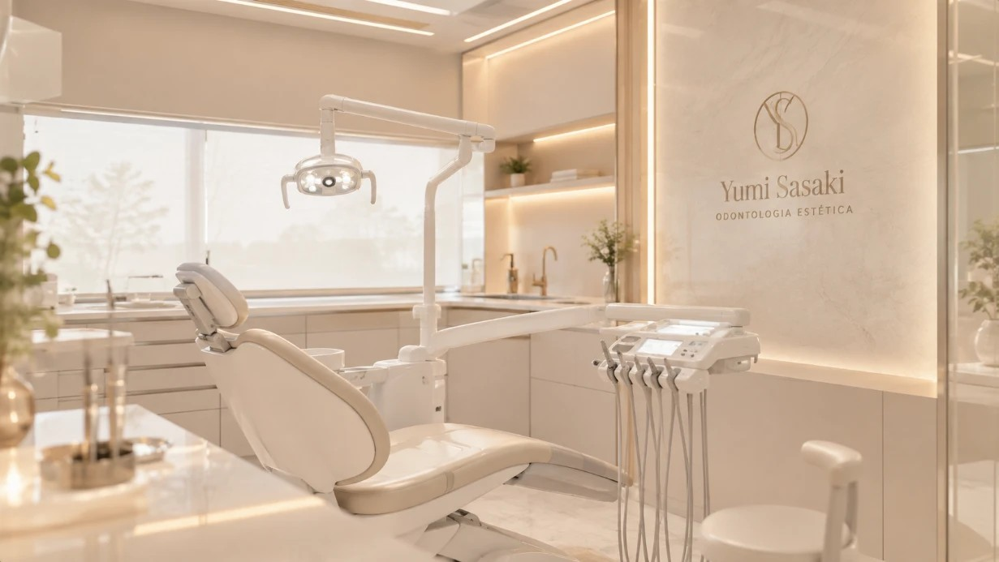
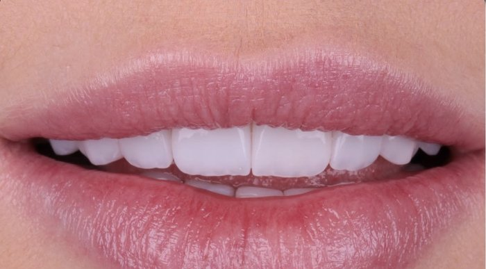
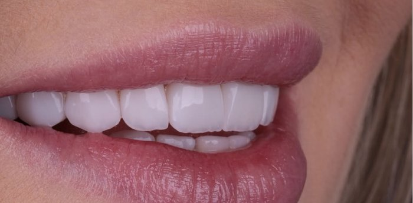
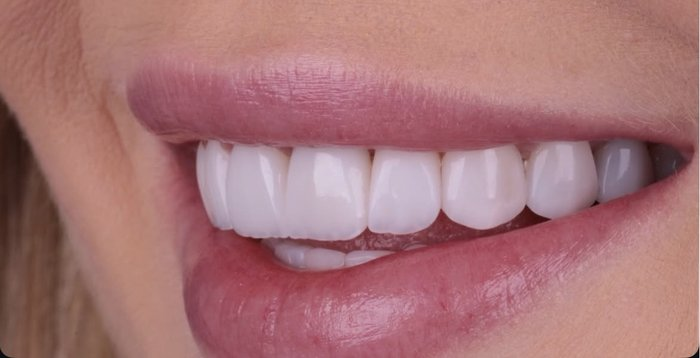
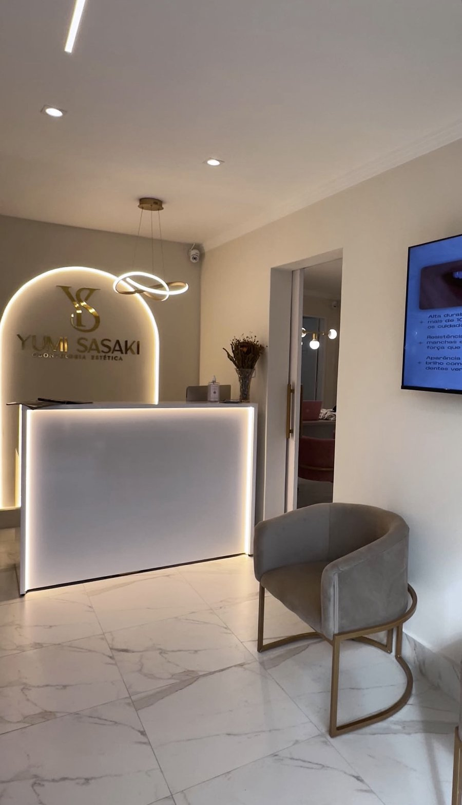

Um sorriso que carrega a sua essência.
Cuidado odontológico de alta precisão em Euclides da Cunha — lentes de contato dental, Invisalign, clareamento e próteses planejadas digitalmente, com a sensibilidade de quem trata cada sorriso como único.
Técnica apurada, olhar artístico.
Dra. Yumi Sasaki é cirurgiã-dentista especializada em odontologia estética, dedicada a devolver naturalidade, função e confiança a cada sorriso que passa por seu consultório em Euclides da Cunha.
Une planejamento digital do sorriso a um atendimento próximo e humano — do escaneamento intraoral ao resultado final, cada etapa é conduzida com precisão milimétrica e respeito ao tempo de cada paciente.
- Especialista em Odontologia Estética e Digital
- Certificação em alinhadores invisíveis (Invisalign)
- Planejamento digital de sorriso (DSD)
Cuidados pensados para o seu sorriso
Cada procedimento é planejado digitalmente antes de qualquer intervenção, unindo previsibilidade e naturalidade ao resultado.
Lentes de Contato Dental
Facetas ultrafinas de porcelana que corrigem forma, cor e alinhamento, preservando ao máximo a estrutura do dente.
Invisalign
Alinhadores invisíveis e removíveis para corrigir o posicionamento dos dentes com discrição e conforto no dia a dia.
Clareamento Dental
Protocolos a laser e caseiro supervisionado, com resultado gradual e natural, sem sensibilidade excessiva.
Prótese Dentária
Coroas, facetas e próteses de altíssima estética, devolvendo função mastigatória e harmonia ao sorriso.
Facetas em Resina
Restaurações estéticas em resina composta, corrigindo forma e cor do sorriso com técnica conservadora.
Toxina Botulínica
Harmonização orofacial que suaviza a expressão do sorriso, complementando o resultado estético.
Odontologia Digital
Escaneamento intraoral e planejamento 3D do sorriso (Digital Smile Design) antes de qualquer procedimento.
Arraste para girar
Cada sorriso, planejado em 3D antes de tocar o dente
Escaneamento intraoral, simulação digital e planejamento de precisão (Digital Smile Design) — cada etapa é visualizada e ajustada na tela antes de qualquer procedimento, para um resultado previsível do início ao fim.
Veja a transformação de perto
Lentes de contato dental em porcelana — arraste o ponto dourado para revelar o resultado.
Toque e arraste — ou use as setas do teclado quando o ponto estiver selecionado.




Um ambiente pensado para o seu conforto
Do primeiro passo na recepção à cadeira de atendimento, cada detalhe do consultório foi planejado para transformar a visita ao dentista em um momento de cuidado — nunca de ansiedade.
Estrutura moderna, iluminação suave e tecnologia de ponta em odontologia digital, em Euclides da Cunha.
Venha nos visitar
Endereço
Av. Almerindo Rehem, 1216 — Nova América, Euclides da Cunha, BA, 48500-000
Horários
Atendimento sob agendamento — confirme o melhor horário pelo WhatsApp.